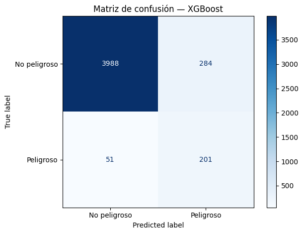

Benchmark de cinco modelos de clasificación binaria con tracking de experimentos via MLflow. Los modelos se evalúan sobre el mismo test set con métricas apropiadas para datasets desbalanceados: precision, recall y F1 por clase, priorizando F1 Macro como métrica de selección.
Modelos evaluados, en orden de complejidad creciente: Regresión Logística (baseline), Random Forest, XGBoost, LightGBM, SVM.
Cómo usar este notebook
Para ver los experimentos en la UI de MLflow, una vez ejecutadas todas las celdas corré este comando desde la carpeta notebooks/:
Cada entrenamiento se registra en MLflow con sus parámetros y métricas. Esto permite comparar experimentos de forma sistemática y reproducible, replicando el flujo de trabajo estándar en equipos de ML.
2026/04/25 13:41:08 WARNING mlflow.models.model: `artifact_path` is deprecated. Please use `name` instead.
2026/04/25 13:41:08 WARNING mlflow.sklearn: Saving scikit-learn models in the pickle or cloudpickle format requires exercising caution because these formats rely on Python's object serialization mechanism, which can execute arbitrary code during deserialization. The recommended safe alternative is the 'skops' format. For more information, see: https://scikit-learn.org/stable/model_persistence.html
2026/04/25 13:41:10 WARNING mlflow.models.model: `artifact_path` is deprecated. Please use `name` instead.
2026/04/25 13:41:10 WARNING mlflow.sklearn: Saving scikit-learn models in the pickle or cloudpickle format requires exercising caution because these formats rely on Python's object serialization mechanism, which can execute arbitrary code during deserialization. The recommended safe alternative is the 'skops' format. For more information, see: https://scikit-learn.org/stable/model_persistence.html
2026/04/25 13:41:12 WARNING mlflow.models.model: `artifact_path` is deprecated. Please use `name` instead.
2026/04/25 13:41:12 WARNING mlflow.sklearn: Saving scikit-learn models in the pickle or cloudpickle format requires exercising caution because these formats rely on Python's object serialization mechanism, which can execute arbitrary code during deserialization. The recommended safe alternative is the 'skops' format. For more information, see: https://scikit-learn.org/stable/model_persistence.html
2026/04/25 13:41:13 WARNING mlflow.models.model: `artifact_path` is deprecated. Please use `name` instead.
2026/04/25 13:41:13 WARNING mlflow.sklearn: Saving scikit-learn models in the pickle or cloudpickle format requires exercising caution because these formats rely on Python's object serialization mechanism, which can execute arbitrary code during deserialization. The recommended safe alternative is the 'skops' format. For more information, see: https://scikit-learn.org/stable/model_persistence.html
2026/04/25 13:41:19 WARNING mlflow.models.model: `artifact_path` is deprecated. Please use `name` instead.
2026/04/25 13:41:19 WARNING mlflow.sklearn: Saving scikit-learn models in the pickle or cloudpickle format requires exercising caution because these formats rely on Python's object serialization mechanism, which can execute arbitrary code during deserialization. The recommended safe alternative is the 'skops' format. For more information, see: https://scikit-learn.org/stable/model_persistence.html
XGBoost fue seleccionado como modelo principal por F1 Macro 0.753, el más alto del benchmark. La matriz de confusión desagrega los resultados en verdaderos positivos, falsos positivos, verdaderos negativos y falsos negativos, permitiendo evaluar el comportamiento del modelo en cada clase por separado.
Code
cm = confusion_matrix(y_test, resultados['XGBoost'])disp = ConfusionMatrixDisplay(confusion_matrix=cm, display_labels=['No peligroso', 'Peligroso'])disp.plot(cmap='Blues')plt.title('Matriz de confusión — XGBoost')plt.tight_layout()plt.show()

6. Hyperparameter Tuning — GridSearchCV
Búsqueda exhaustiva sobre 27 combinaciones de hiperparámetros con validación cruzada de 5 folds. GridSearchCV garantiza que la selección de hiperparámetros no depende de un split particular del dataset.
Fitting 5 folds for each of 27 candidates, totalling 135 fits
Mejores parámetros:
{'learning_rate': 0.3, 'max_depth': 7, 'n_estimators': 200, 'scale_pos_weight': np.float64(16.949404761904763)}
Mejor F1 Macro en cross-validation: 0.7454
GridSearchCV no mejoró el modelo base en F1 Macro (0.75 vs 0.75). El tuning bayesiano con Optuna se evalúa en 07_optuna.ipynb como alternativa más eficiente para explorar el espacio de hiperparámetros.
Code
import joblibjoblib.dump({'modelo': modelos['XGBoost'], 'umbral': 0.20}, '../data/xgboost_final.pkl')print("Modelo guardado en data/xgboost_final.pkl")